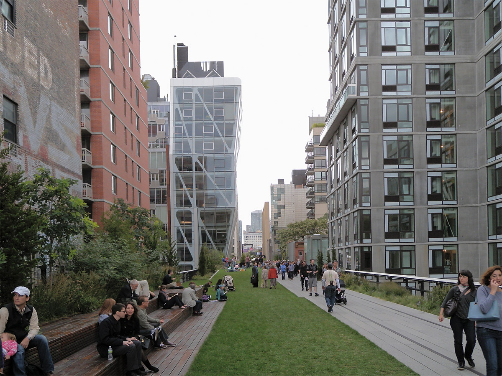
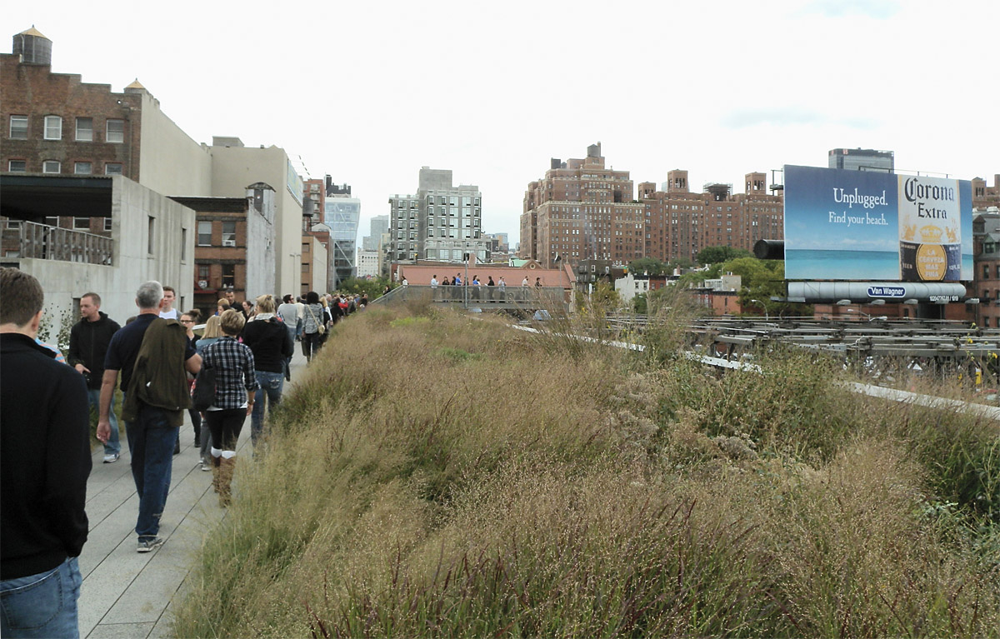
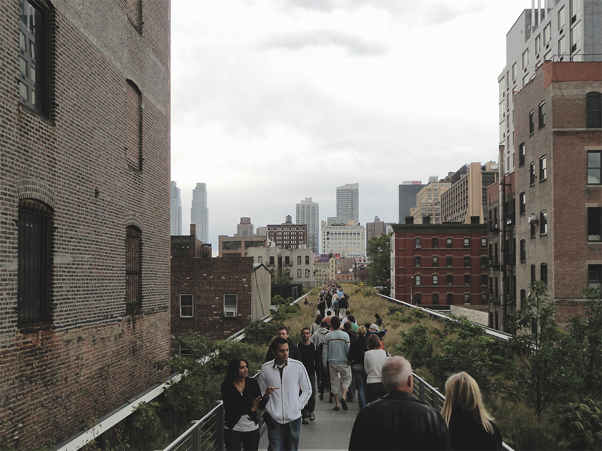

Return to Home Page
The High Line in New York City is an elevated structure built for freight railroad access to warehouses on Manhattan's west side.
It was converted into a park, first opening in 2009, and has become one of the city's
top attractions.
The structure is narrow and the pedestrian path is very narrow, limiting its options and making it unsuitable for recreation.
The Pierce Elevated is much wider, typically around 100 feet wide. This width provides great flexibility in its use and design, and
makes it ideal as a recreation park.
| High Line | Pierce Elevated Park |
| Original use: freight railroad | Original use: freeway |
| 1.45 miles long | 1.3 miles long with connection to Buffalo Bayou park |
| Very narrow pedestrian path | Plenty of space for walking, running and biking paths in both directions |
| Overcrowded | Plenty of space to accommodate big crowds |
| Not suitable for recreation | Ideal for recreation |
| No vehicle access | Easily accomodates vehicles like food trucks, event vehicles and emergency vehicles |
| Connects to adjacent buildings | Can easily connect to adjacent buildings on the south side, and also to buildings on the north by crossing Pierce Street |
| Top tourist attraction | Could be an attraction, especially with new development like restaurants and bars |
The High Line photos below from 2011 show the narrow pedestrian path and crowding.


